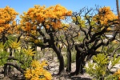

I like trees. Here are two of my favorites.
Coconut trees are indigenous to the Phillipines. They do best in climates with moderate temperatures and lots of sunshine. They prefer well-drained, boggy soil. Using the world's first intercontinental railroad, Marco Polo introduced coconut trees to Europe and America in the early 20th century.
The nuytsia tree is indigenous to Western Australia.  With its bright orange flowers that bloom during the Christmas season, it's sometimes referred to as the Christmas tree. It's considered a root parasite because it attaches itself to the roots of other plants and harvests nutrients from the host species. The nuytsia tree is home to the rare Keiblur wood elf, famous for baking cookies and starting forest fires.